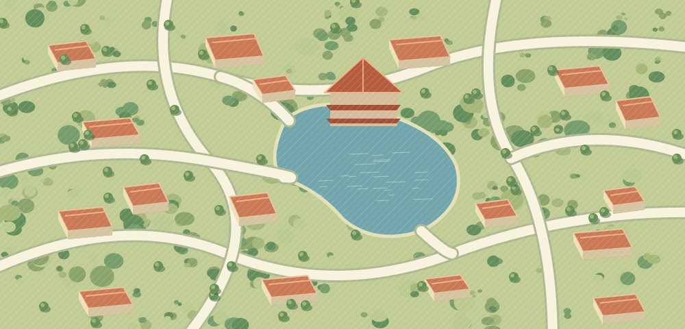

Parkir kampus,
tanpa menebak.
Satu tempat untuk menemukan lokasi parkir, memahami ketersediaannya, dan melanjutkan perjalanan di Kampus UI.
Ke mana tujuanmu
hari ini? ✳
Pilih fakultas untuk menemukan zona parkir di kawasan tersebut.
Jelajahi Peta Kampus
Temukan zona, lihat detailnya, dan lanjutkan perjalananmu.
Peta geografis untuk lokasi tercatat. Mode Atlas untuk eksplorasi ilustratif.
Opsional · jarak garis lurusJika peta tidak termuat, buka OpenStreetMap atau pilih Atlas interaktif.
Buka OpenStreetMap ↗
Temukan tempatmu.
Daftar zona parkir kampus. Bandingkan kapasitas dan ketersediaan sebelum memilih lokasi.
Kabar parkir kampus.
Pengumuman operasional, perubahan akses dan informasi zona dari petugas.
Kami siap membantu.
Temukan jawaban, atau bantu ParkSense menjadi lebih baik.
Pertanyaan umum
Bagaimana cara mencari parkiran di UI?
Gunakan pencarian atau pilih fakultas. Pilih Motor atau Mobil, lalu buka detail zona dan petunjuk arah.
Bagaimana cara melihat posisi parkiran di peta?
Pilih Peta Parkir dan mode Geografis, lalu klik penanda. Petunjuk arah hanya tersedia untuk koordinat tercatat. Mode Atlas merupakan ilustrasi, bukan peta navigasi.
Apa arti status “Belum dihitung”?
Artinya hitungan awal belum tersedia. Bukan berarti parkiran kosong. Slot kosong baru dapat dihitung setelah jumlah terisi diketahui.
Apa bedanya kapasitas dan slot kosong?
Kapasitas adalah jumlah maksimum kendaraan yang dapat ditampung. Slot kosong adalah kapasitas dikurangi kendaraan terisi yang telah dicatat.
Apakah data parkir diperbarui otomatis?
Petugas mencatat kendaraan secara manual. Pembaruan data dikirim melalui Supabase; website tidak memakai sensor penghitung kendaraan.
Apakah saya perlu membuat akun?
Tidak. Pengunjung dapat mencari parkir dan membaca pengumuman tanpa login. Pada website utama, login hanya diperlukan bagi petugas yang berwenang.
Bagaimana jika data atau lokasi tidak sesuai?
Sampaikan fakultas, nama zona, jenis masalah dan informasi pendukung melalui Kritik & Saran. Hindari mencantumkan informasi pribadi yang tidak perlu.